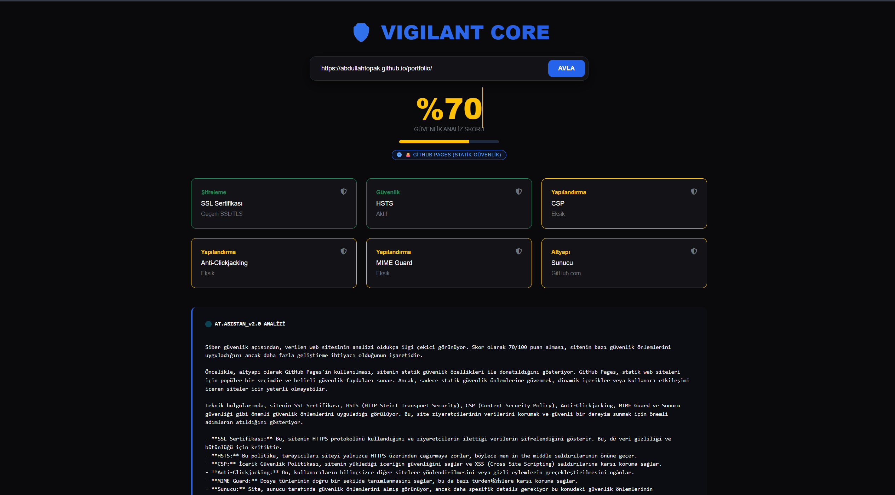

Bilgisayar mühendisliği eğitimime devam ederken, teknolojiyi sadece üretmek için değil, insanların hayatına dokunmak için kullanmayı hedefliyorum. Özellikle erişilebilirlik ve sosyal fayda odaklı projeler geliştirmek benim için büyük bir motivasyon kaynağı. Bilgisayarlı görü (Computer Vision) ve mobil uygulama geliştirme alanlarında kendimi aktif olarak geliştiriyorum. Android Studio üzerinde Java ile kullanıcı dostu mobil uygulamalar tasarlarken; YOLOv8 ve Zero-DCE gibi güncel yapay zeka modelleriyle gerçek dünya problemlerine çözümler üretiyorum.
Görme engelli bireylerin günlük yaşamını kolaylaştırmaya yönelik çalışmalar yapmak, teknolojiyi daha kapsayıcı hale getirme hedefimin önemli bir parçası. Aynı zamanda analitik düşünme becerilerimi geliştirmek için optimizasyon ve problem çözme alanlarına da ilgi duyuyorum. Sürekli öğrenmeye açık, üretmeyi seven ve gelişimi bir süreç olarak gören biri olarak; her yeni projede hem teknik hem de sosyal açıdan kendimi ileri taşımayı amaçlıyorum.
Teknik detaylar için projenin üzerine tıklayın.
SCI düşük ışık iyileştirme ve YOLOv8 nesne tespiti mimarilerini birleştiren, görme engelli bireyler için tasarlanmış bağımsız yaşam teknolojisi.
AKILLI ASİSTAN SİSTEMİ
"Görme Engelliler İçin Bağımsız Yaşam Teknolojisi"
Gerçek zamanlı nesne ve engel tanımlama.
Düşük ışıklı ortamlarda yapay zekalı görüntü iyileştirme.
Kamera üzerinden el hareketlerinin algılanması.
Nesne ve mesafe bilgilerinin sesli asistanla iletilmesi.
Özel bir siber güvenlik platformu için eğitilmiş; ağ güvenliği, sızma testleri ve zafiyet analizi konularında uzmanlaşmış interaktif yapay zeka asistanı.
root@cyber-ai:~$ initiate_scan
Analysing network packets...
AI: Potansiyel XSS açığı tespit edildi. Çözüm öneriliyor...

Web sitelerinin siber güvenlik yapılandırmalarını denetleyen ve elde edilen verileri Llama 3.3 tabanlı bir yapay zeka ile profesyonel analiz raporlarına dönüştüren bir güvenlik motorudur.
Yenilikçi projeler geliştirmeyi ve teknoloji üzerine sohbet etmeyi çok seviyorum! Aklınızda ortak bir çalışma fikri, danışmak istediğiniz bir konu veya sadece samimi bir 'Merhaba' varsa, dilediğiniz platformdan bana yazabilirsiniz. Haberlerinizi bekliyorum! :)
Powered by Llama 3.3 & Groq API